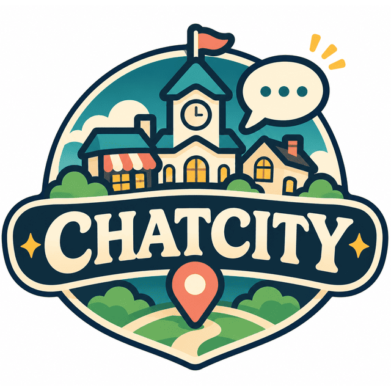

CHATCITY
CHATCITY WORLD
👥
—
명
로어북 다운
WORLD LIBRARY
/
CHATCITY
👥 현재 인구
—
명
로어북 다운받기
AN INTERACTIVE LOREBOOK
Welcome to CHATCITY.
지도에서 장소를 선택하세요.
MAP ARTWORK
마을 지도 이미지를 넣을 공간
타로점
더 크라운
도심의 클럽
도심의 바
작은 공원
카페
야쿠르트 카트
화단
작은 서점
언덕 위 집
숲속 연못
탐정 사무소
엄마의 엄마 식당
선박 수리 작업장
부두 근처 바
파출소
공원
공원 연못
골목길
검도장
태권도장
빌딩숲
하수구
버스 정류장
시청
펜트하우스
마을 초입
고립된 주택
우체통
단독 주택
농사꾼의 집
마을 시장
마을 뒷산
코끼리도 춤을 춘다
헬스장
편의점
찜질방
소방서
의원
정신병원
뒷골목
도박장
농장
수제화 상점
교회
게시판
도서관
La La Lola
낡은 단독 주택
하우스 보트
마법 약방
럭키 드로우
부동산
봄의 정원
기와집
개인 별장
개인 선착장
병원
빵집
목록
−
100%
+
↺
클릭 가능한 장소
6
개
드래그하여 이동 · 마우스 휠로 확대/축소
CHATCITY · HTML / CSS / Vanilla JavaScript
CHATCITY / RESIDENTS
주민 전체보기
✕
주민 검색
검색 결과가 없습니다.
✕
엘로이즈